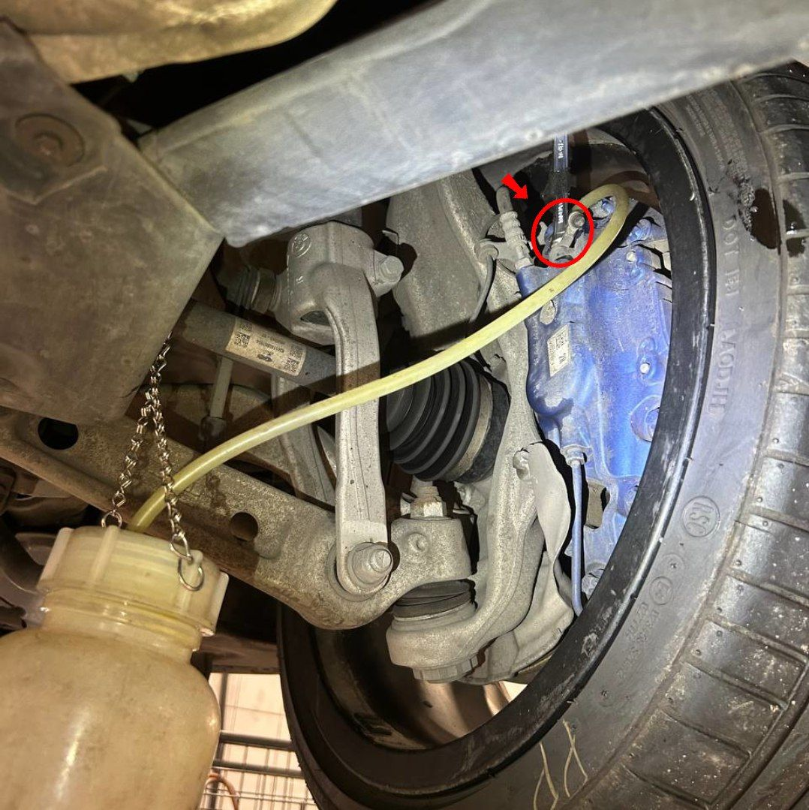

Home / Brakes and suspension
BMW Brake Fluid Change: How It's Done and Can You DIY?
Quick answer
Brake fluid absorbs moisture and is usually changed about every two years. In a workshop, a pressure bleeder is connected to the reservoir under the hood while old fluid is drained from the bleed nipple at each wheel, until clean fluid comes out. At home it is possible with a pressure or vacuum bleeder and jack stands, but it is a safety job: use the fluid in your manual, never let the reservoir run dry and don't drive if the pedal feels soft.

Why brake fluid needs changing
Brake fluid absorbs moisture from the air over time. Water lowers its boiling point, which can make the pedal feel soft after hard braking, and it can corrode parts of the brake system. Mileage doesn't matter much, because the moisture builds up with time. BMW's service schedule typically calls for a change about every two years, so check yours.
Which fluid to use
Many modern BMWs call for a low-viscosity DOT 4 fluid, often written DOT 4 LV. Check the cap of the reservoir and your manual, and use a sealed bottle, because opened fluid absorbs moisture. Don't mix it with silicone-based DOT 5.
How a workshop does it
In the workshop, I use a special pressure bleeder. It is connected to the brake fluid filler under the hood and switched on, and it keeps the reservoir topped up with fresh fluid under light pressure while the old fluid is drained at the wheels.
- At each wheel, take the small rubber cap off the bleed nipple on the caliper (circled in the photo).
- Fit a clear tube on the nipple and put the other end in a bottle.
- Open the nipple with a wrench. The old fluid flows out into the bottle.
- Drain roughly a quarter of a liter at each wheel, until clean fluid comes out. Then close the nipple.
- Do all four wheels, in the sequence for your model. A commonly quoted order on left-hand-drive cars is right rear, left rear, right front, left front.
- Switch off the bleeder, check that the level is at MAX and press the pedal to check that it feels firm.

The amounts vary by car and by how long you flush. About a liter of fluid for the whole job is a common figure.
Can you do it at home?
It is possible, but it is a safety job, so be honest about your experience.
What you need
- A pressure or vacuum bleeder, or a helper for the pump-and-hold method
- About 1 to 1.5 liters of the correct sealed fluid
- A wrench that fits the bleed nipples. The size varies by model
- Clear tubing and a bottle for the old fluid
- Jack stands, never just a jack
- Gloves and eye protection. Brake fluid damages paint and irritates skin and eyes
How to do it
- Raise the car safely and remove the wheels.
- Remove as much old fluid as you can from the reservoir (a syringe works), then fill it with fresh fluid.
- Connect the pressure bleeder, or have your helper ready, and open the nipple at the first wheel.
- Let the fluid flow until it runs clean, and keep the reservoir from ever running low. If it does, air gets in.
- Close the nipple before you release the pressure or the pedal, then move to the next wheel.
- Top up to MAX, check the pedal, check for leaks and tighten the wheels to the correct torque.
- Take the first drive slowly and test the brakes before you rely on them.
Safety note. If the pedal stays soft, if there is a leak, or if an ABS or DSC warning appears, don't drive. Air that gets into the ABS or DSC unit may need a bleed procedure with a diagnostic tool. Dispose of old fluid at a recycling point.
FAQ
Do I really need to change my brake fluid every 2 years?
Yes, if your service schedule says so. Moisture builds up with time regardless of mileage.
Can brake fluid last 5 years?
I wouldn't count on it. The water content keeps rising, and the boiling point drops.
Can I just top up the brake fluid?
Topping up is fine for a slightly low level, but a falling level means worn pads or a leak. Find out which.
What brake fluid does my BMW need?
Many modern BMWs call for a low-viscosity DOT 4 (DOT 4 LV). Check the reservoir cap and your manual.
How long does a BMW brake fluid change take?
It depends on the car and the method. In a workshop with a pressure bleeder it is a routine job. At home, allow more time and don't rush.
This guide is general information based on personal experience, not professional advice. Check your own car's manual for exact specs and read the disclaimer before starting any job.